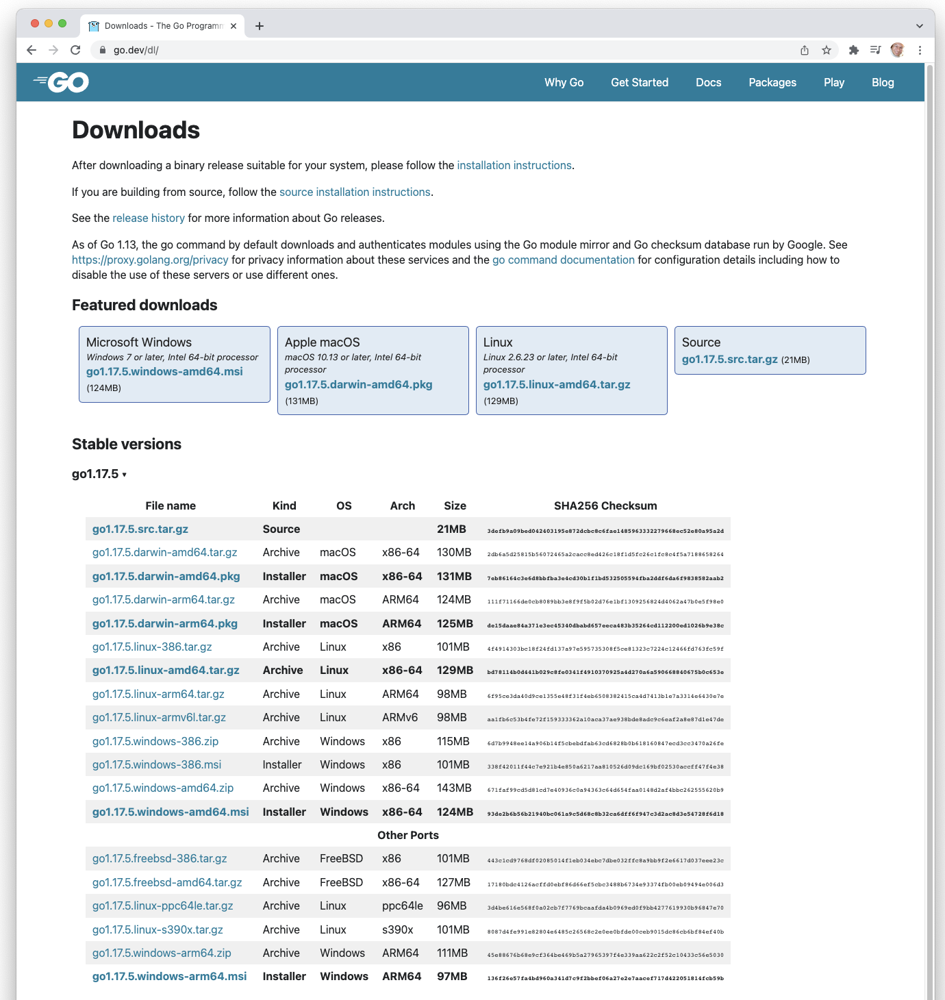

100 Points total.
Item #8 and #9 will be the first auto-graded items. I will use automated tests to check that the code works.
Note: Not all the assignments will be this long. Don’t Panic!
Go runs on Windows, Mac and Linux (and a bunch of other systems too). To install you will need to download the Go compiler for your system. If you already have Go installed you will may have to delete the old version, then install the new version. Go is super-stable - there is no reason to keep an old version of the compiler around.
Search google for “download golang”. Go is usually referred to as “golang” when you search for it.
You should find: https://go.dev/dl/ . The page should look like 
For Windows there is a .msi installer that is very good. It will automatically install
go into C:\go\ and setup your permissions. You can choose a different path for the install.
Follow the instructions on the download site for Windows.
Install at least version 1.17.6 of the language. On mac you download .pkg and click on it. On windows the .msi and run it (double click). On Linux… Follow the instructions on the download page for your flavor of Linux.
You will need to use an editor. I don’t usually use an IDE. I do use vi (vim). Pick a text editor that you like.
If you need to create a portable USB drive with Go and VIM on it see me after class. This will apply to the people using the UW computers. I am working on it.
You will need a github.com account. Go and create one if you do not already have one. A free account will work.
Submit:
go version at the command line and capture the output. Submit a 1 line file with the output
in it. You can cut paste or pipe the output to a file. You should see a version around go1.17 or go1.17.6.For this class you will need to have git installed. On Mac you should be able to use brew to install git.
brew install git
On Windows download from https://git-scm.com/download/win and install git.
This will put a funny 4 square icon on your desktop that says ‘bash’ in it. Click on that to bring up a
bash shell.
Let’s put our code in the right place from the very start. On a mac that is ~/go/src/github.com/[Your Github Account]/.
In this case go to that directory - or build it. Then create a directory called hello-world.
I used my username in this. You need to use your github.com username.
cd
mkdir -p ./go/src/github.com/pschlump
cd ./go/src/github.com/pschlump
mkdir hello-world
cd hello-world
In Windows you should be in your home directory xyzzy or a similar directory. In the bash shell from git the same commands as on Mac should work (the did for me a few minutes ago).
Cut and paste - or type in (probably better for you) the following program. These instructions are
also on the Go download page. Put it into a file called main.go.
1: package main
2:
3: // Your Name - it is important if you want to get credit for your assignment.
4: // Assignment 1.2 hello world - This is important too. If you want credit.`
5:
6: import "fmt"
7:
8: func main() {
9: fmt.Printf("Hello Wonderful 可笑 幽默 白痴 World\n")
10: }
To run it:
go build
./hello-world
or on Windows
go build
./hello-world.exe
If you get an error about access an un-exported function, then you failed to capitalize the first
letter in a method call. Capital letters tell Go that the function is exported. fmt.printf
will cause this error. fmt.Printf will work.
You can run a go program with just go run.
go run hello-world.go
Submit:
fmt.Pr... to fmt.Println("Hello, 世界") - re run the code and save the output.
What is 世界?You may want to work through the A Tour of Go. That will help with this class.
This is the set of commands for setting up your Go environment.
$ export GOPATH=/Users/<Your Github Username>/go
$ mkdir -p ~/go/src/github.com/<Your Github Username>
$ cd ~/go/src/github.com/<Your Github Username>
$ mkdir hello-world
$ cd hello-world
$ vi hw.go
$ go build
$ ./hello-world
Hello Wonderful World
You are probably in a directory something like C:\home\your-name. I also have a copy of Vi for windows
installed. You can use your favorite text editor instead. I installed vim using the gvim81.exe from
https://www.vim.org/download.php#pc.
$ mkdir hello-world
$ cd hello-world
$ vi hw.go
$ go build
$ hello-world.exe
Hello Wonderful World
You will want to create a directory for each main program and under that directories for each package that you create in Go.
If you have a different text editor that you like better than vim - then install it - use it (Microsoft Word is not an editor! It will not create files that you can compile with Go.)
I worked through the rest of the homework on a Windows 10 system with very little Windows related difficulty.
Using the git-bash your C:\ drive is /c/, your E:\ drive is /e/. You use / for all the directory
separators.
Echo should take the command line arguments (after the 0th one, the name of the command) and print them out.
Cut and paste the following code. Get it to run. Compile with go build. Run it with go run <your file>.go Arguments.
1: package main
2:
3: // Your Name - it is important if you want to get credit for your assignment.
4: // Assignment 1.3 echo command line arguments.
5:
6: import (
7: "fmt"
8: "os"
9: )
10:
11: func main() {
12: ags := os.Args[1:]
13: // ^-------------------------- Declare
14: // ^----------------------- use "os" package
15: // ^-------------------- Command line arguments
16: // ^---------------- Arguments are an array
17: // ^--- 1: -------- this is a sub-slice of array
18: for ii, ag := range ags {
19: if ii < len(ags)-1 {
20: fmt.Printf("%s ", ag)
21: } else {
22: fmt.Printf("%s", ag)
23: }
24: }
25: fmt.Printf("\n")
26: }
import is a listos.Args[1:] is a slice of an arrayrange:= declares variables.Submit:
aa BB cc.Cut and paste the following code. Get it to work. Run it.
Save the output - edit the code and change Your Name.
Add your email address.
Follow THIS link, JSON in Go.
There is a section with an “Example (CustomMarshalJSON)” - Click on the example to open the
example. In the example an custom Go type called Animal is created (Around line 10).
Custom code allows saving of the Animal type in a JSON file and re-loading the
Animal type from the file. In the JSON file it will be “zebra” “gopher” - in
the Go code it will be an integer constant (like a C++ enum). The Constant named
values are created around lines 12 to 15.
This process is called marshal/unmarshal. The functions are called UnmarshallJSON
and MarshallJSON. You should cut-paste the code, put it into a directory and run it.
Create the echo2 directory and cd into it.
You should be in a directory ~/go/src/github.com/<YourGithubUsername>/echo2.
Edit main.go and put this code in it:
1: package main
2:
3: // Your Name - it is important if you want to get credit for your assignment.
4: // Assignment 1.4 echo command line arguments and parse arguments.
5:
6: import (
7: "encoding/json"
8: "flag"
9: "fmt"
10: "io/ioutil"
11: "os"
12: )
13:
14: type ConfigData struct {
15: Name string
16: Value string
17: }
18:
19: func main() {
20: var Cfg = flag.String("cfg", "cfg.json",
21: "config file for this call")
22:
23: // Parse CLI arguments to this, --cfg <name>.json
24: flag.Parse()
25:
26: fns := flag.Args()
27: // ^---------------- Note the := declares fns
28:
29: if Cfg == nil {
30: fmt.Printf("--cfg is a required parameter\n")
31: os.Exit(1)
32: }
33:
34: gCfg, err := ReadConfig(*Cfg)
35: // ^ nd ^ ------------------ Multiple return values
36: if err != nil {
37: fmt.Fprintf(os.Stderr,
38: "Unable to read confguration: %s error %s\n",
39: *Cfg, err)
40: os.Exit(1)
41: }
42:
43: fmt.Printf("Congiguration: %+v\n", gCfg)
44: // ^------------------->
45: // Format in print shows field names
46: fmt.Printf("JSON: %+v\n", IndentJSON(gCfg))
47:
48: for ii, ag := range fns {
49: // ^------ Declare in scope of 'for'
50: // ^------ Loop over the 'fns' slice
51: if ii < len(fns) {
52: fmt.Printf("%s ", ag)
53: } else {
54: fmt.Printf("%s", ag)
55: }
56: }
57: fmt.Printf("\n")
58: }
59:
60: func ReadConfig(filename string) (rv ConfigData, err error) {
61: var buf []byte
62: buf, err = ioutil.ReadFile(filename)
63: if err != nil {
64: fmt.Printf("Error: %s\n", err)
65: return
66: }
67: err = json.Unmarshal(buf, &rv)
68: if err != nil {
69: fmt.Printf("Error: %s\n", err)
70: return
71: }
72: return
73: }
74:
75: func IndentJSON(v interface{}) string {
76: s, err := json.MarshalIndent(v, "", "\t")
77: if err != nil {
78: return fmt.Sprintf("Error:%s", err)
79: } else {
80: return string(s)
81: }
82: }
Create a 2nd file - call it cfg.json with:
{
"Name": "Corwin",
"Year": "100",
"Value": "200"
}
Go through this program and read and analyze the following things:
type ConfigData struct read and understand that this will declare a struct.var Cfg =... Declare a variable. It will be a pointer to a string because flag.Stgring returns a pointer to a string.flag.Parse() this uses the flag package to parse the command line arguments.fns := flag.Args() this will pick off the remaining arguments from the command line. If you have echo2 --cfg file.json A B C this will be a slice, 3 long, with the strings A, B, C in it.ReadConfig call the ReadConfig function. The function is declared later in the file.fmt.Print.... %+v print out a structure with the field names. Very useful for debugging your program.func ReadConfig declares a function. Note functions can return a set of values, not just one.return ConfigData{}, err declare an empty ConfigData{} and return an error.func IndentJSON.... v interface{} create a data type that can receive any type that is passed.json.MarshalIndent marshal data into a string.Why did 100 print out. What happened to 200. Create a new JSON file under a new name and
set the year field to 2018.
Submit:
Use the following structure to read a JSON file. Create a program that will read JSON in, print it, write it out in a new JSON file. Get the file name for the input and output from the command line.
Add a map/dictionary field in the JSON input that is
{
"TxHash": "Your actual Name",
"TxIn": 22,
"TxOut": 44
}
Example Run:
./read-json1 --input in.json --output out.json
The struct to include in your code.
type TransactionType struct {
TxHash string
TxIn int
TxOut int
}
You will need to use:
ioutil.WriteFile ioutil packageIndentJSON from above.Submit:
Goal: create a go package and a test for that package.
Create a new directory inside your github.com/username. This example will use pschlump as the username.
You need to substitute your github.com user name.
cd
mkdir -p ~/go/src/github.com/pschlump/mkPkg/test1
cd ~/go/src/github.com/pschlump/mkPkg/test1
vi test1.go
In this case I created 2 directories, mkPkg and inside it test1.
A simple example package in the mkPkg/test1 directory edit a file, lets call it test1.go.
package test1
// Your Name
// DoubleValue returns twice the value passed.
func DoubleValue ( n int ) int { // note the capital 'D' in double
return n * 2
}
// add function TrippleValue
It will make life simpler if you make the package name the same as the directory name. Don’t put blanks in your directory names.
The capital letter at the beginning of DoubleValue tells Go that you are exporting the name.
The test code is placed into mkPkg/test1 in the file test1_test.go.
package test1
import "testing"
// Your Name
func TestDouble(t *testing.T) {
tests := []struct {
in int
expected int
}{
{
in: 23,
expected: 46,
},
{
in: 1,
expected: 2,
},
}
for ii, test := range tests {
rr := DoubleValue(test.in)
if rr != test.expected {
t.Errorf("Test %d, expected %d got %d\n", ii, test.expected, rr)
}
}
}
// add test for TripleValue at this point
to run the test in the directory mkPkg/test1:
go test
It should print out ‘PASS’ when the test work. If the test fails you should get errors.
It is really important that you understand how Go testing works. This will be 1 of 2 ways in which your code will be graded. You will be expected to develop your own unit tests. I will supply my grader with additional tests and those will be run with your code.
We will create a simple main program that will use the package that test1. Go up 1
level to ~/go/src/github.com/pschlump/mkPkg.
Edit a main program:
package main
// Your Name
import (
"fmt"
"github.com/pschlump/myPkg/test1" // import package you created
)
func main() {
out := test1.DoubleValue(8) // Call function in your package
fmt.Printf("out = %d\n", out) // should print "out = 16"
// add call to TripleValue at this point
}
Submit:
The fmt package provides lots of useful output options. Go and read about fmt.
In the following program
package main
import (
"encoding/json"
"fmt"
)
var IVar int
var SVar string
var I64Var int64
var UIVar uint64
type Example17 struct {
A int
B string
}
var E17 Example17
// Add int64 and uint64 types
var SliceOfString []string
var MapOfString map[string]string
var MapOfBool map[string]bool
// init will initilize data before main() runs. You can have more than one init() function.
func init() {
SliceOfString = make([]string, 0, 10)
MapOfString = make(map[string]string)
MapOfBool = make(map[string]bool)
}
func main() {
SliceOfString = append(SliceOfString, "AAA", "BBB")
MapOfString["mark"] = "first"
MapOfString["twain"] = "last"
MapOfBool["mark"] = true
MapOfBool["twain"] = false
fmt.Printf("IVar = %d, type of IVar %T\n", IVar, IVar)
fmt.Printf("IVar = %v, type of IVar %T\n", IVar, IVar)
// TODO: add prints for your int64 and uint64 types
fmt.Printf("SVar = %s, type of SVar %T\n", SVar, SVar)
fmt.Printf("Address of SVar = %s, type of SVar %T\n", &SVar, &SVar)
fmt.Printf("E17 = %s, type of E17 %T\n", &E17, &E17)
fmt.Printf(" E17 = %+v, E17 as JSON: %s\n", &E17, IndentJSON(E17))
// TODO: add prints for the other types above - so you can see them printed out.
// TODO: use a %s and a %T for SliceOfString
// TODO: use a %s and a %T for MapOfString
// TODO: use a %#v and a %T for MapOfBool
// TODO: Print out each of them with the IndentJSON function.
}
func IndentJSON(v interface{}) string {
s, err := json.MarshalIndent(v, "", "\t")
if err != nil {
return fmt.Sprintf("Error:%s", err)
} else {
return string(s)
}
}
Add a print statement to show the type of the variables. See the comments with TODO in the code.
Submit:
Implement a simple program to copy a file. See copy a file in go
and modify the code to take the input and output file names from the command line. Go and read about
defer and see how it is used.
copy-file input-file-name output-file-name
There is a line in the example code, _, err = io.Copy.... What is the _ for? Replace it with a
statement like this: (note the := that will declare test1)
test1, err := io.Copy(to, from)
Recompile the code - what happens?
Implement a copy file program that uses ioutil.ReadFile and ioutil.WriteFile. What are the disadvantages
of doing the copy in this way?
Write a paragraph explaining the disadvantages of the ioutil.ReadFile, ioutil.WriteFile disadvantages.
Submit:
io.Copy(...) in it and the one that uses ioutil.ReadFile.This is the first set of code that we will directly use in building our blockchain.
A hash is a number, usually large, that maps a set of data into a unique number.
A different set of data will result in a different hash. The file file1
will hash to ecd67ca5a72802084fcea4883b6877ecfba7f95c0aece07ea504359d54eb4610.
That’s a big number. Note that the number is in base 16 when it was printed
out (so it has 0..9 and a..f for digits).
It is possible that two different sets of data will produce the same
value. This is called a hash collision. A good hash rarely has collisions.
We will use a bunch of different hash functions. All of the has functions have a
similar interface in Go. Today’s function is Keccak256. This is the hash that
is used in Ethereum. It is a sha3 derivative.
The Go documentation for sha3 includes keccak256 but we will be using the one in the Go-Ethereum package.
An example of using it is: keccak256 Note that the example is wrong, the output will be in lower case. The example shows it in upper case. Go and read the example.
This Ethereum code includes a function that you will want to copy. Lines 44 to 51. Give credit where credit is due. (See Below - I copied it)
Note that the Keccak256 function takes a slice of byte, []byte, and returns a slice of byte.
We will need to type-cast strings into this type to get it to work in the demo.
Copy 1.8’s ioutil.ReadFile version of the copy into a new directory called ksum. We are goging to modify
it to print out the keccak256 sum of a file. This is like md5sum or sha1sum.
Go and read the documentation on these 2 command line utilities.
We will build the keccak256 sum program. You don’t need to implement any of the command line options like -b/--binary. Just
read more than one file and print out the results.
Sample Output:
$ ksum file1 file2.txt file3
file1 ecd67ca5a72802084fcea4883b6877ecfba7f95c0aece07ea504359d54eb4610
file2.txt 0695253b82a83d557392ab196ff309a1fedc6cbab0d7d4186d2664dcec92b5ff
file3 fb15d651aaf994584aa6da109b5dba096de83bf2f44da6a224cf41d8d5e92f14
I have supplied the fiels file1, file2.txt, and file3.
Process as many files as are on the command line.
So start out with an example - that just calculates the hash of the string "bob":
package main
import (
"flag"
"fmt"
"io/ioutil"
"os"
"golang.org/x/crypto/sha3"
)
func main() {
flag.Parse()
fns := flag.Args()
if len(fns) == 0 {
fmt.Fprintf(os.Stderr, "Usage: ./ksum [file ...]\n")
os.Exit(1)
}
for _, fn := range fns {
data, err := ioutil.ReadFile(fn)
if err != nil {
fmt.Fprintf(os.Stderr, "Unable to read %s, error: %s\n", fn, err)
continue
}
fmt.Printf("%s %x\n", fn, Keccak256(data))
}
}
// Keccak256 calculates and returns the Keccak256 hash of the input data.
func Keccak256(data ...[]byte) []byte {
d := sha3.NewLegacyKeccak256()
for _, b := range data {
d.Write(b)
}
return d.Sum(nil)
}
After you create/copy this code into a file, in a directory called ksum, you will need to
go get
to have Go pull in github.org/x/crypto/sha3 package.
If you do not do the go get you
will get an error cannot find package.... The go get will pull in the dependencies for this
from github so it will take will take a little bit.
Add in the ability to process the command line. ioutil.ReadFile returns a byte slice and an error.
Report the error if it occurs. You will not need a type cast to pass the byte slice to Keccak256.
fmt.Printf can print out in hex. Note the %x format.
Submit:
Go is a simple language that Google developed. It is not an “academic” research language. There are no new cool features. The good things about go are:
Go is missing generics and objects. When I first started to use Go I thought that it would be a big deal to not have objects. Turns out I really don’t need or want objects. Generics would be useful on rare occasions.
Save your code from this assignment. We will be using chunks of it in the next assignment.